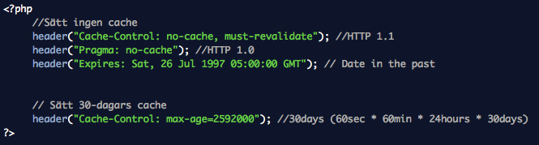

Typer av web cache
- Browser cache
- Proxy cache
- Gateway cache - CDN
- Serverside cache
Content Delivery Network
Expires
HTTP Date - Utgår från GMT Stort stöd Bilder och resuser som får tid långt framåt - Byt filnamn BILD Klockan - Syncproblem Lätt att glömma att man satt en tid långt fram
Cache-Control
- max-age - Antal sekunder som innehållet anses giltigt
- public - Fritt fram att cache:a
- private - Tillåts endast caching privat - webbläsare
- no-cache - Kontrollera med servern för att få släppa cache:at data
- no-store - Ingen cache alls!
- must-revalidate - Måste följa cache-reglerna ovan (I HTTP finns specialfall)
Om både Expires och Cache-Control finns tar den senare överhand
Introducerades med HTTP 1.1 Pragma - Stöds inte av de flesta cache
Cache - PHP

Problem vid web forms osv.